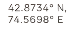
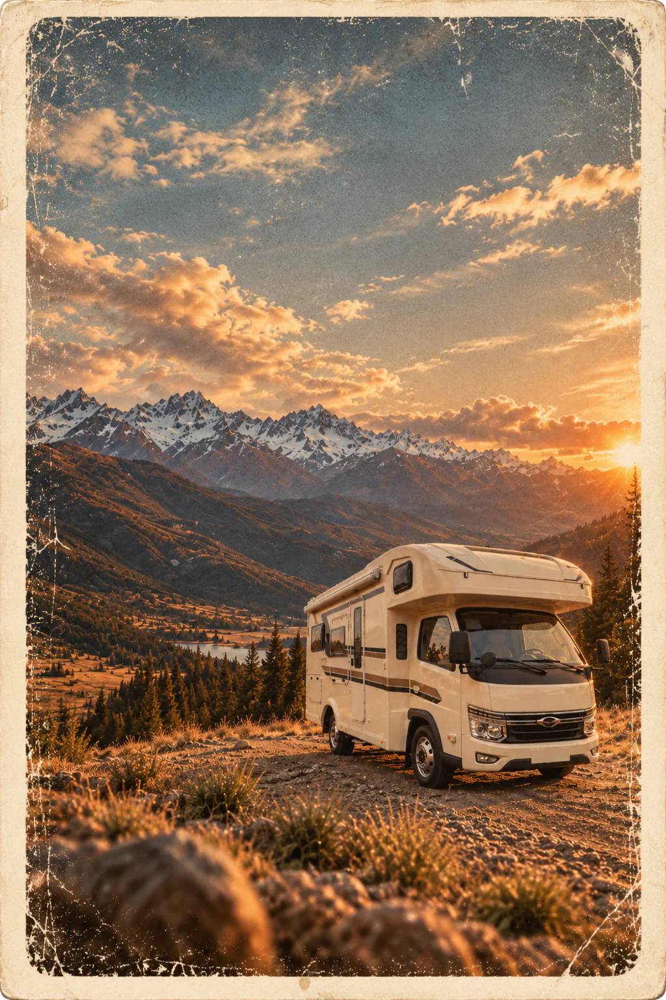

Остались вопросы?
Коротко отвечаем на то, что обычно хочется понять до бронирования
Мы рядомНужен ли специальный опыт для управления автодомом?
Специальный опыт путешествий на автодоме не требуется. Перед поездкой мы познакомим вас с автомобилем, объясним особенности управления, покажем, как пользоваться оборудованием и жилым модулем.
Для самостоятельной аренды водитель должен быть старше 25 лет, иметь стаж вождения от 5 лет и действующее удостоверение соответствующей категории.
Можно ли путешествовать по собственному маршруту?
Да! Вы можете выбрать один из подготовленных маршрутов Tian Way или предложить собственное направление.
Мы поможем оценить доступность дорог для выбранного автодома, учесть сезонные ограничения, подобрать подходящие стоянки и спланировать остановки. Некоторые горные и труднодоступные участки требуют предварительного согласования.

Что входит в стоимость аренды автодома?
Вы получаете подготовленный к путешествию автодом с жилым модулем и оборудованием согласно комплектации выбранной модели.
В стоимость также включен пробег 250 км за каждые сутки аренды. Неиспользованный пробег суммируется в течение поездки.
Дополнительное туристическое снаряжение можно арендовать отдельно. Точный перечень включенных услуг и оборудования указан в карточке автодома.
Как забронировать автодом и какой залог необходимо внести?
Для подтверждения бронирования необходимо внести предоплату в размере 30% от стоимости аренды.
Оставшиеся 70% оплачиваются до начала путешествия. Также предусмотрен возвратный залог $500, который вносится отдельно и возвращается после проверки состояния и комплектации автодома согласно условиям договора.
Чем готовое путешествие отличается от обычной аренды?
При самостоятельной аренде вы путешествуете в собственном темпе, выбираете места остановок и организуете отдых по своему усмотрению.
Готовое путешествие Tian Way — это заранее разработанная программа с маршрутом, достопримечательностями, активностями и организационной поддержкой. В зависимости от программы мы также организуем транспорт, проживание и питание.
Состав включенных услуг указывается в описании каждого путешествия.
Не нашли ответ?
Если есть вопросы, оставьте заявку — мы свяжемся с вами


 Следующий шагМы свяжемся с вами и поможем собрать подходящий вариант поездки.
Следующий шагМы свяжемся с вами и поможем собрать подходящий вариант поездки.